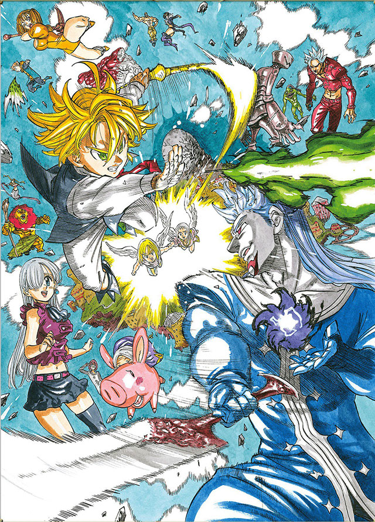

Nanatsu no Taizai: Prisoners of the Sky 15 , fevereiro , 2018
O site oficial do anime The Seven Deadly Sins / Nanatsu no Taizai começou a exibir o trailer de The Seven Deadly Sins:
Prisoners of the Sky (Nanatsu no Taizai: Tenkuu no Toraware Hito), um filme anime que vai estrear nos cinemas japoneses
a 18 de agosto de 2018.
Foi igualmente revelada uma imagem promocional que se pode ver abaixo.

Na história do filme, passou-se pouco tempo desde que os Sete Pecados Capitais e a Princesa Elizabeth trouxeram a paz ao reino. Para comemorar
o aniversário o rei, os Sete Pecados Capitais viajam para uma terra remota em busca do ingrediente fantasma “sky fish”. Meliodas e Hawk acabam
num “Palácio do Céu” que existe acima das nuvens, onde todos os moradores têm asas. Meliodas é confundido com um menino que cometeu
um crime e é preso. Enquanto isso, os moradores estão a preparar uma cerimónia de defesa contra uma besta feroz que desperta uma vez
a cada 3.000 anos. Mas o Seis Cavaleiros de Preto chegam e removem o selo da besta para ameaçar a vida dos moradores do “Palácio do Céu”.
Meliodas e os seus aliados encontram os Seis Cavaleiros de Preto em batalha.
Os seiyuu são os mesmos da série anime pelo que contamos com:
- Yuuki Kaji como Meliodas
- Sora Amamiya como Elizabeth
- Misaki Kuno como Hawk
- Aoi Yuki como Diane
- Tatsuhisa Suzuki como Ban
- Jun Fukuyama como King
- Maaya Sakamoto como Merlin
- Mamoru Miyano como Gilthunder
- Ryohei Kimura como Hauser
- Takahiro Sakurai como Griamor
Com animação pela A-1 Pictures (Sword Art Online, Magi) a direção é de Yasuto Nishikata, o guião é de Makoto Uezu e Keigo Sasaki regressa
para o design de personagens.